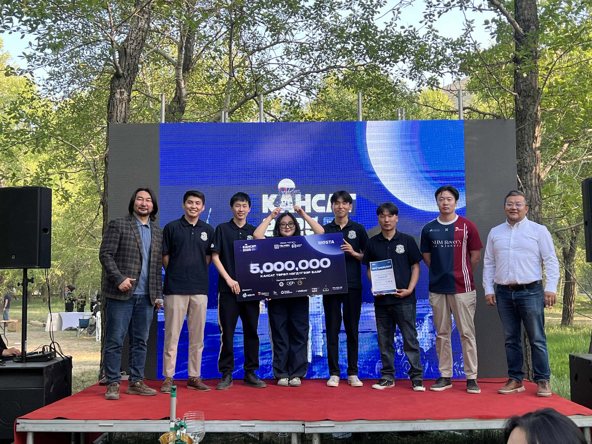

Home
Боловсрол ба ур чадвар
Ажлын туршлага
Ирээдүйн зорилго
холбоо барих
Сонирхол,hobby
Чөлөөт цагаараа Электроник тэмцээн уралдаанд оролцох сонирхолтой
2024 онд Инновацын эзэд” 2024 уралдаант нэвтрүүлэгт МУИС-аас indoor green house бүтээлээр QoT баг болон оролцсон

>
2025 онд кансат тэмцээнд QoT space нэрээр кансат төрөлд оролцон 1-р байр эзэлсэн
